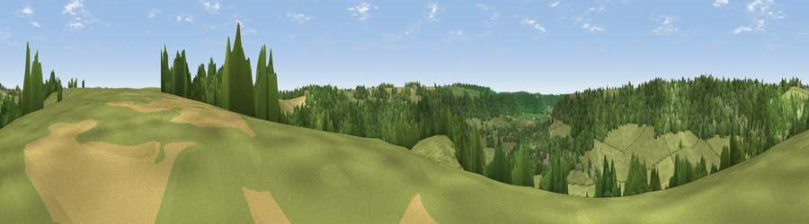

Viewpoint near Owlpen
#36680 in England · top 68% of its area beats it · near OwlpenThe view, rendered

A 360° render of this exact spot computed from the terrain model, tree cover and land cover — summer colours, afternoon light, calibrated against photographs of famous viewpoints. Real trees, hedges and buildings will differ in detail.
The panorama
Grey silhouette: terrain skyline in each direction (720 bearings, Earth curvature and refraction included). Dashed green: skyline with trees (+15 m) and buildings (+8 m) as obstacles. Blue strip: how far the ground is visible on each bearing.
Where the view opens
Wedge length = distance to the farthest visible ground on that bearing (vegetation-aware). Rings at 10, 25 and 50 km.
What fills the view
48% woodland · 48% grassland · 4% cropland ·
Angular shares of the visible panorama (visual magnitude), not map area. Landscape diversity 0.38 (0–1 Shannon).
Key numbers
More beautiful places nearby
The staircase of upgrades: each row has a higher view potential than everything closer. Driving times are estimates from straight-line distance, calibrated against real road routing — check an actual route before setting out.
| Place | Direction | Drive | Score |
|---|---|---|---|
| Viewpoint near Owlpen | ESE · 1 km | ~2 min | 45.5 |
| Crawley Hill [Hetty Pegler's Tump] | NW · 1 km | ~4 min | 72.3 |
| Viewpoint near Nympsfield | NNW · 3 km | ~6 min | 77.5 |
| Viewpoint near Stinchcombe | W · 6 km | ~13 min | 79.4 |
| Viewpoint near Stinchcombe | W · 6 km | ~14 min | 80.5 |
| Nottingham Hill | NNE · 34 km | ~52 min | 80.9 |
| Chase End Hill | N · 37 km | ~55 min | 81.5 |
| Ragged Stone Hill | N · 38 km | ~56 min | 82.5 |
51.68962, -2.28964 · source: screening · position refined by local search. Computed location — check access rights before visiting.